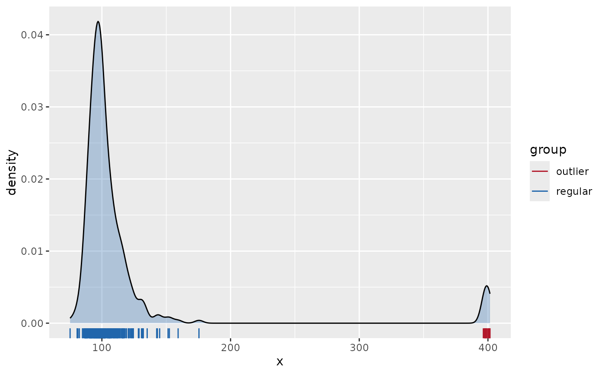
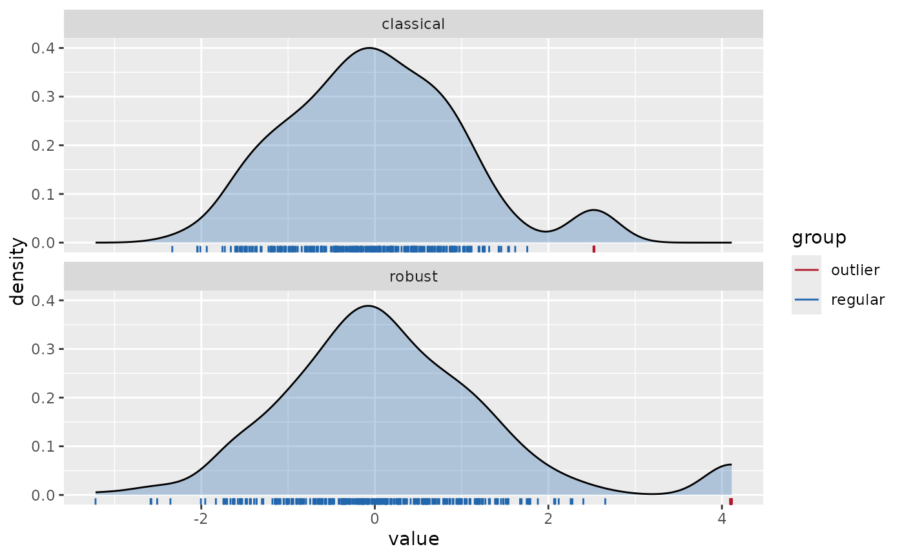

Transforms each variable toward central normality by inverting a Tukey
g-and-h distribution fitted by robust quantile least squares (rQLS;
Xu, Iglewicz and Chervoneva, 2014). Accepts positive, zero and negative
values, and fits skewness and tail heaviness separately. robust = FALSE
gives the classical quantile least squares fit (QLS), for comparison.
Usage
robust_gandh(
x,
n_quantiles = 10,
cutoff = NULL,
max_iter = 50,
tol = 1e-06,
standardize = TRUE,
robust = TRUE
)Arguments
- x
A numeric vector, matrix, data frame or tibble, one variable per column.
- n_quantiles
Number of fitting quantiles, an integer from 4 to 20. Default is 10, as recommended for rQLS in the paper.
- cutoff
Positive, finite Tukey biweight cutoff on the median/MAD standardized input scale.
NULL(default) selects it adaptively for each variable. It is an order-statistic fitting tolerance, not a normal score cutoff or a contamination percentage.- max_iter
Maximum number of trimming/refitting iterations per cutoff. Default is 50.
- tol
Positive, finite relative tolerance for convergence. Default is 1e-6.
- standardize
Logical: additionally standardize latent scores using the fitting inliers (
TRUE, default).- robust
Logical: fit by robust quantile least squares (
TRUE, default), or by classical quantile least squares on all the observations (FALSE), to compare (see Details).
Value
An object of class specproc_gandh, inheriting from
specproc_transformation, with the same components as robust_boxcox():
transformation: A tibble of transformed values.summary: A tibble withvariable,location,scale(both on the original input scale),g,h,objective(quantile mean squared error on the median/MAD input scale),n_trimmed,cutoff(on the standardized input scale),convergedandtuning_met. Parameters and diagnostics areNAfor variables left unchanged.tuning_metisNAwhen a cutoff was supplied. Withrobust = FALSE,n_trimmedis 0, andcutoffandtuning_metareNA.fits: Parameters and fitting diagnostics used bypredict().standardize: Thestandardizeargument.robust: Therobustargument.
Details
The fitted distribution maps a standard normal value \(z\) to $$x = A + B \frac{\exp(gz)-1}{g}\exp(hz^2/2),$$ with \(B > 0\) and \(h \ge 0\). At \(g = 0\), the fraction is \(z\). The transformation solves this equation for \(z\) directly, without rounding extreme cumulative probabilities to zero or one. The inverse transformation evaluates the equation.
Each variable is first centered by its median and divided by its MAD. QLS fits model quantiles to sample order statistics at probabilities \(p_j = (j-1/3)/(m+1/3)\). Initialization compares this QLS fit with a second QLS fit using equally spaced probabilities from 0.15 to 0.85, selecting the smaller median absolute order-statistic discrepancy. This additional start reduces masking when contamination reaches an outer fitting quantile. The rQLS iterations compare all order statistics with their fitted quantiles, calculate Tukey biweight weights, and refit QLS to quantiles of the observations with nonzero weights. The positive weights are used for selection, not as quantile weights. All original observations, including the trimmed ones, are transformed.
With cutoff = NULL, a bounded numerical version of the paper's adaptive
search is used: starting at least at 10 on the standardized input scale,
a geometric pilot search brackets the cutoffs retaining
more than half and all observations, followed by a descending grid with
the paper's grading interval and tail-weight ordering checks. At most
25 pilot and 51 grading fits are made. If no candidate meets the ordering
checks, the largest converged candidate retaining more than half the
observations is used, with a warning and tuning_met = FALSE. A supplied
cutoff bypasses this search. This numerical search need not give exactly
the same cutoff as the authors' implementation.
With robust = FALSE, the distribution is fitted by QLS to all the
observations, without trimming (the non-robust fit of the paper), and the
latent scores are standardized by the mean and standard deviation of all
the observations; cutoff, max_iter and tol are not used. Outliers in
a tail then move the outer fitting quantiles, which inflates \(g\) and
\(h\): the transformation compresses that tail too much, and pulls the
outliers in among the other values (see the examples).
With standardize = TRUE, latent normal scores are additionally centered
and scaled by the mean and standard deviation of the fitting inliers.
With FALSE, the fitted latent scores are returned directly; they already
account for the distribution's location and scale.
Variables with fewer than max(10, n_quantiles + 1) observed values or
zero MAD are left unchanged. Failed fits are left unchanged with a
warning. Missing values are ignored by fitting and stay missing. Infinite
input values are rejected. This is a continuous-distribution model;
substantial ties, mixtures and censoring need separate consideration.
For \(h = 0, g \ne 0\), new values outside the fitted distribution's
support become NA with a warning. Inverse values exceeding floating
point range also become NA with a warning.
References
Xu, Y., Iglewicz, B., Chervoneva, I. (2014). Robust estimation of the parameters of g-and-h distributions, with applications to outlier detection. Computational Statistics & Data Analysis, 75:66-80. doi:10.1016/j.csda.2014.01.003 .
Examples
# 300 values from a g-and-h distribution, skewed to the right (g = 0.5)
# with heavier tails than the normal distribution (h = 0.1), and 15 high
# outliers near 400
set.seed(6)
x <- c(tukey_gh(type = "r", n = 300, location = 100, scale = 10, g = 0.5, h = 0.1),
rnorm(15, mean = 400, sd = 2))
group <- rep(c("regular", "outlier"), c(300, 15))
ggplot2::ggplot(data.frame(x, group), ggplot2::aes(x)) +
ggplot2::geom_density(fill = "#2166ac", alpha = 0.3) +
ggplot2::geom_rug(ggplot2::aes(colour = group)) +
ggplot2::scale_colour_manual(values = c(outlier = "#b2182b", regular = "#2166ac"))

# the classical fit (QLS on all the values) overestimates the skewness g
# and the tail weight h; the robust fit (rQLS) trims the 15 outliers and
# stays close to g = 0.5 and h = 0.1
classical <- robust_gandh(x, robust = FALSE)
robust <- robust_gandh(x)
params <- c("g", "h", "n_trimmed")
round(rbind(classical = unlist(classical$summary[params]),
robust = unlist(robust$summary[params])), 2)
#> g h n_trimmed
#> classical 0.85 0.32 0
#> robust 0.52 0.09 15
# the classical transformation compresses the right tail too much, and
# pulls the outliers within 3 standard deviations; the robust one leaves
# them far out
transformed <- data.frame(
fit = rep(c("classical", "robust"), each = length(x)),
value = c(classical$transformation[[1]], robust$transformation[[1]]),
group = rep(group, 2)
)
ggplot2::ggplot(transformed, ggplot2::aes(value)) +
ggplot2::geom_density(fill = "#2166ac", alpha = 0.3) +
ggplot2::geom_rug(ggplot2::aes(colour = group)) +
ggplot2::scale_colour_manual(values = c(outlier = "#b2182b", regular = "#2166ac")) +
ggplot2::facet_wrap(~fit, ncol = 1)

regular <- transformed$group == "regular"
# the skewness of the transformed regular values, and the outlier closest
# to them
round(tapply(transformed$value[regular], transformed$fit[regular], medcouple), 2)
#> classical robust
#> -0.06 0.02
round(tapply(transformed$value[!regular], transformed$fit[!regular], min), 2)
#> classical robust
#> 2.52 4.10
data(forageLIBS)
contents <- forageLIBS[c("Ca", "K", "P", "Mn")]
fit <- robust_gandh(contents[1:300, ])
fit$summary
#> # A tibble: 4 × 10
#> variable location scale g h objective n_trimmed cutoff converged
#> <chr> <dbl> <dbl> <dbl> <dbl> <dbl> <dbl> <dbl> <lgl>
#> 1 Ca 0.614 0.171 0.319 0 0.000694 0 5 TRUE
#> 2 K 1.98 0.479 0.148 0.0726 0.00174 0 9.85 TRUE
#> 3 P 0.250 0.0541 0.115 0.0401 0.00105 0 5 TRUE
#> 4 Mn 47.3 17.8 0.509 0 0.00179 0 5 TRUE
#> # ℹ 1 more variable: tuning_met <lgl>
new <- predict(fit, contents[301:368, ])
head(predict(fit, new, inverse = TRUE))
#> # A tibble: 6 × 4
#> Ca K P Mn
#> <dbl> <dbl> <dbl> <dbl>
#> 1 0.431 2.25 0.229 56
#> 2 0.805 1.91 0.210 112
#> 3 0.786 2.61 0.312 35
#> 4 0.807 2.11 0.232 41
#> 5 0.919 2.17 0.235 136
#> 6 0.323 1.61 0.206 49